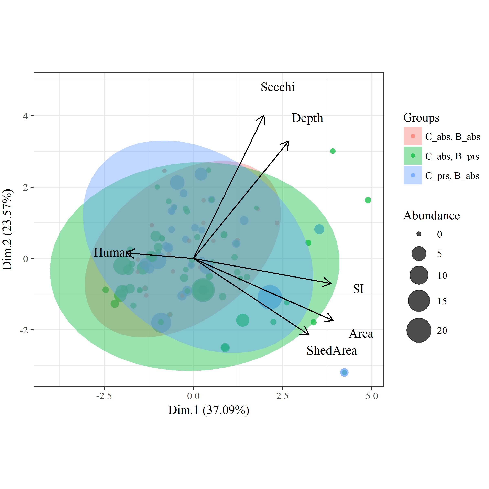
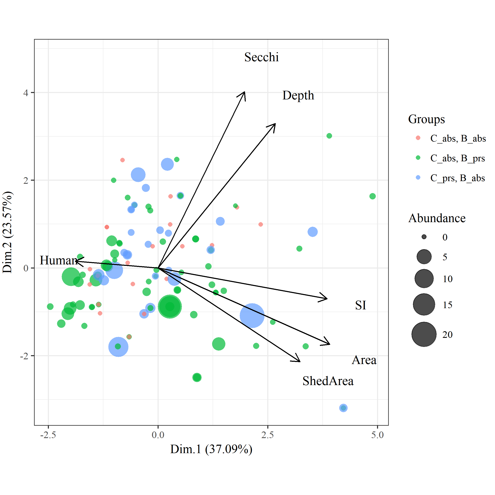
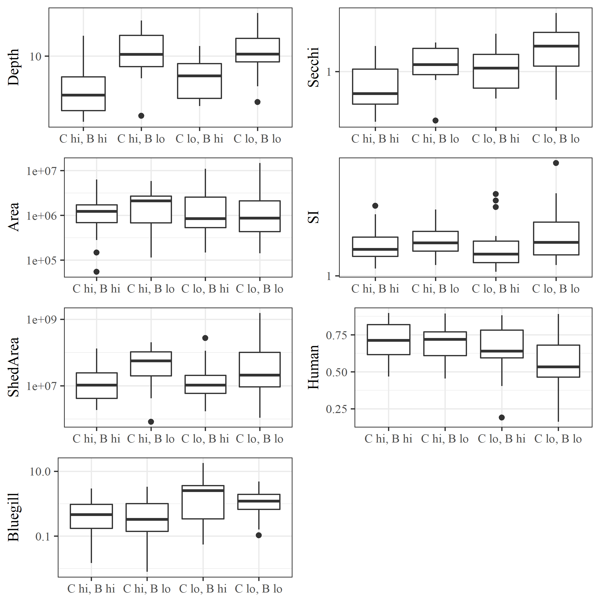

README
Files
All data created in R\dat_proc.R. Source data in the ignore folder were created elsewhere.
country.RDataSpatialPolygonsDataFrame of US conterminous state bordersfish_dat.RDataSame asfish_all.RDatabut data are converted to CPUE, surveys are Jul/Aug/Sep, and ‘standard population assessments’ and ‘resurveys’. CPUE is estimated as total fish weight (kg) divided by effort, unique to species, date, lake, and gear type. CPUE was estimated separately for trapnet, gillnet. Length to weight equations were from the Handbook of Freshwater Fishery Biology. The arguments tocpue_funshow the species and gear type combos, including parameters for length/weight conversions. Bullhead are black and yellow bullhead combined, and crappie are white and black crappie combined. Species are not separated by adult or yoy.fishveg_dat.RDatacombined fisheries and veg data, veg data summarized by total rich and subm rich for each lake. Fish and veg data combined if the survey was in the same year. Covariates for each lake include UTM coordinates, ecoregion, watershed area, lake depth, lake area, percent human development in watershed, SDI, and secchi depth.map_dat.RDataSeveral R objects for creating plots.mnstate.RDataSpatialPolygonsDataFrame of MN state boundariesveg_dat.RDataDNR veg transect data from 1992 to present. Format is dow, date, transect, species, and abundance category. NULL abundance entries are not removed, these are species in the survey but not observed on a transect. Note that there were no lakes in the dataset that had zero veg.
Summary table
| Ecoregion | Variable | Ave. (Med.) | Var. | Min./Max. |
|---|---|---|---|---|
| ETF | SpeciesRichness | 10.3 (10) | 27.6 | 0 / 24 |
| Carp | 2.1 (0.4) | 23 | 0 / 45.1 | |
| Bullhead | 1.4 (0.1) | 42.6 | 0 / 87.4 | |
| Bluegill | 1.9 (1.1) | 6.7 | 0 / 18 | |
| Area | 2.5 (1.4) | 12.3 | 0.1 / 22.5 | |
| Depth | 11.2 (9.7) | 50.5 | 1.8 / 34.2 | |
| Human | 0.6 (0.6) | 0 | 0.1 / 1 | |
| SDI | 1.7 (1.5) | 0.4 | 1.1 / 4.4 | |
| Secchi | 1.6 (1.4) | 0.7 | 0.3 / 5.4 | |
| ShedArea | 112.5 (28.9) | 77601.3 | 0.2 / 2808.1 | |
| GP | SpeciesRichness | 3.6 (3) | 13.6 | 0 / 16 |
| Carp | 6.1 (3.7) | 47.8 | 0 / 36 | |
| Bullhead | 5.8 (1.9) | 95 | 0 / 48.4 | |
| Bluegill | 0.5 (0.1) | 1.8 | 0 / 10.8 | |
| Area | 2.3 (1.5) | 6.7 | 0.2 / 10.9 | |
| Depth | 4.7 (3.4) | 13.7 | 1.5 / 25.3 | |
| Human | 0.7 (0.8) | 0 | 0.4 / 0.9 | |
| SDI | 1.7 (1.5) | 0.3 | 1 / 3.5 | |
| Secchi | 0.8 (0.6) | 0.4 | 0.2 / 3.5 | |
| ShedArea | 34.1 (10.8) | 2134.9 | 1.2 / 249.4 |
## var vif
## Carp 1.40087938822791
## Bullhead 1.32609969244421
## Bluegill 1.2967275170074
## Secchi 2.31599398230004
## SDI 1.34263804704789
## Human 1.22289758460126
## Area 1.65132535880825
## ShedArea 1.61081633407663
## Depth 2.36527586392161
##
## All variables have VIF < 10, max VIF 2.37## [1] "Carp" "Bullhead" "Bluegill" "Secchi" "SDI" "Human"
## [7] "Area" "ShedArea" "Depth"Figures


## $Dim.1
## $Dim.1$quanti
## correlation p.value
## Area 0.7860206 1.015484e-24
## SI 0.7734069 1.630443e-23
## ShedArea 0.6494177 9.532365e-15
## Depth 0.5360987 1.117709e-09
## Secchi 0.3961291 1.536162e-05
## Human -0.3784257 3.888090e-05
##
##
## $Dim.2
## $Dim.2$quanti
## correlation p.value
## Secchi 0.8064513 7.421998e-27
## Depth 0.6610155 2.165823e-15
## Area -0.3495368 1.583936e-04
## ShedArea -0.4291811 2.339178e-06
##
##
## $Dim.3
## $Dim.3$quanti
## correlation p.value
## Human 0.9189264 2.970500e-46
## Depth 0.1911756 4.346867e-02

##
## Call:
## mrpp(dat = tomod, grouping = d$Group)
##
## Dissimilarity index: euclidean
## Weights for groups: n
##
## Class means and counts:
##
## C_abs, B_abs C_abs, B_prs C_prs, B_abs
## delta 2.683 3.398 2.995
## n 20 64 28
##
## Chance corrected within-group agreement A: 0.005913
## Based on observed delta 3.169 and expected delta 3.188
##
## Significance of delta: 0.114
## Permutation: free
## Number of permutations: 999